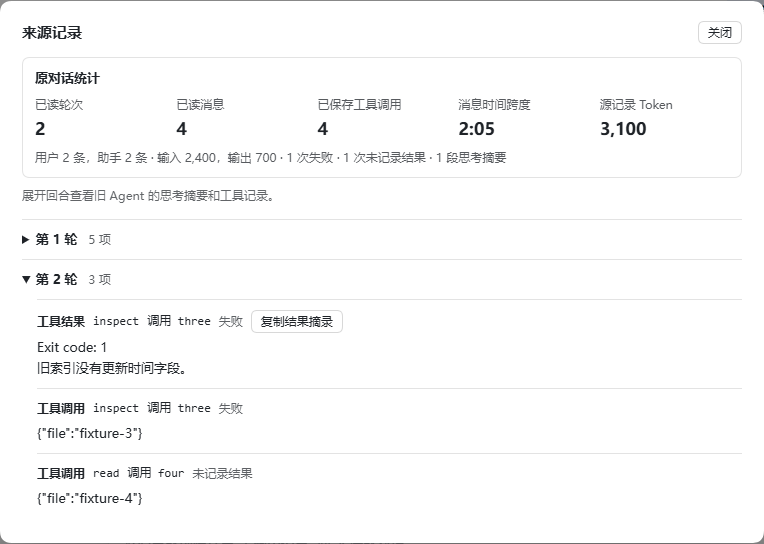
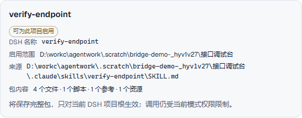
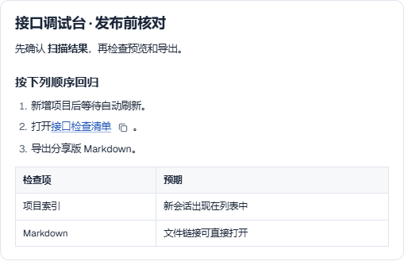

DSH 会话 来源记录
原对话用过哪些工具？
打开会话头部的「来源记录」，可查看原对话的轮次、消息数和已保存的工具调用。源日志提供时间或累计 Token 时，也会显示在这里。
每一轮默认折叠。展开后可查看已保存的思考摘要、工具调用和结果，并核对失败或未记录结果的条目。这里显示的是迁入时保存的数据。

DeepSeek Harness 插件
把 Codex、Claude Code 等 Agent 的旧对话带进 DSH，在原项目目录继续。需要重新开一段对话时，也能带上项目记忆和 Skills。
界面演示来自 v0.9.0
核对想接着聊的内容，在原工作目录创建一条带历史的 DSH 会话。
按 Agent、项目名或路径查找。
点开最近对话，预览消息和来源记录。
确认后在新建的 DSH 会话里输入下一句。
DSH 会话 来源记录
打开会话头部的「来源记录」，可查看原对话的轮次、消息数和已保存的工具调用。源日志提供时间或累计 Token 时，也会显示在这里。
每一轮默认折叠。展开后可查看已保存的思考摘要、工具调用和结果，并核对失败或未记录结果的条目。这里显示的是迁入时保存的数据。

从进度、项目约定和 Skills 中挑选这次要用的资料，再生成可编辑的接续草稿。
核对启用范围、脚本和资源后，保存完整的 Skill 包供 DSH 调用。可在项目内停用或恢复上一版。

Markdown 保留标题、列表和表格。预览中可打开经过核对的项目内文件，交接可导出为本机版或分享版。

面板会实时刷新本机来源。常用项目可以置顶，暂时用不到的项目可以归档后恢复。
安装后，打开 DSH 侧栏的「Agent 工作接续」。
在「插件 → 安装插件」选择下载的安装包。完全退出 DSH 后再打开。
下载安装包用已有的 DSH CLI 安装并启动 Web。
dsh plugin --profile web add @wwwfz/dsh-agent-bridge
dsh web需要 Node.js 22.13 或更新版本，按上面的 Desktop 流程安装生成的 .tgz。
git clone https://github.com/wfz2006/dsh-agent-bridge.git
cd dsh-agent-bridge
npm pack